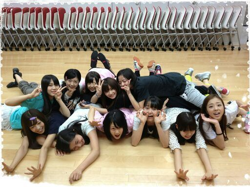
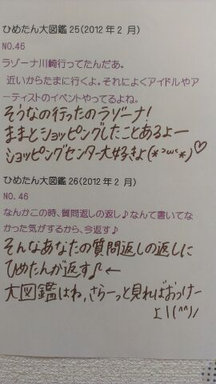

| 2012/10 19 Fri | ひめたん(*>ω<*)そ の215 |

テスト終わったったーよ \(*>ω<*)/ !!!
うきゃきゃうきゃきゃ
今日はクイズもあるよー
みんなお待たせしました
いつもの日記になるよ♪
ひめたん博士なれたかなー
ゆーて半年前の質問とか掲載してから
ほんまに申し訳ないねー
結果はいずれ返ってくるだろうけど
なかったことに←
とゆーことで
長野行くから待っててみなさーん♪
楽しみ長野初長野っ∩^ω^∩
今日いっぱいレッスン
してきたからねー
セトリはまだ言わんけど、
がっつしliveってかんじ！

乃木ここ ！
第1回が配信されましたね♪
えー先に行っておきますよみなさん
えー
悲惨です(´;ω;`)
第1回はやばい！
ひめたんと まりか と うったん なんて
どっちも乗ってんじゃん←
あ、うったん=ゆったんね＊
ひめきゅんさんにあんな顔見られたら
恥ずかしくて死んじゃうなー
でも投票してほしいなー
ということで、
ひめたんは言うまでもなく
ナイスリアクションなので
オンエアみなくていいから
川後teamに投票しよう！
てか川後teamのめんつ大好き///
タイトルの顔文字変えました
質問コーナーのアイコンも変えました
そーゆー気分！

 なんだかんだでダンスとかで運動神経鍛えられてるから、久しぶりの自転車でも平気だったんじゃ？
なんだかんだでダンスとかで運動神経鍛えられてるから、久しぶりの自転車でも平気だったんじゃ？
いやーそう思ったんだけどね
バランス感覚ってのはダンスじゃ維持できないのね...
あーサイクリング行きたい！
中3組でどこかに遊びに行ったこととかないのかな??(⌒-⌒)
春休みに3人で遊ぼうってなってたんだけど、結局予定があわんかったの←
たまに3人でチャット風にメールやりとりとかするー＼(^^)／
中国には天津飯はないんだよー(笑) 知ってた？
てんしんはん(・∀・)
そうなんだー謎だねー謎。
天津飯は一体どこでうまれたんかねー
中３組の中ではだれがリーダーなんでしょう？
メンバーみたらわかるかなー
誰もリーダー格ってかしっかりした人がいないわけですよ。
し、3人だからリーダーとか求めてないんだと思われる＊
誰がリーダーかねーって会話になったことがないからねー。
中3組ってやっぱずっと名前変わらない の？
きっと変わらない！はず
中3組は、写真の3人だけなの？
そだよ！
2011年度の中3はこの3人のみ(^^)
うあーいうああああーい
乃木坂メンバーの最年少と最高齢←っ て何歳差？
22歳−14歳＝8歳差
あんま歳とか意識しないのよ＊
乃木坂は仲良しーるんるん
ひめたんは秋にはどんなお洋服を着たいですか？
ベレー帽！
ベレー帽かぶりたいのベレー帽。
広島から送ってもらおかなー
ショッピングいこかな∩^ω^∩
 ひめたんTシャツ！
ひめたんTシャツ！
ねぇ... 握手会で着てたら、 誉めてくれるん？ ：・(≧∇≦)・：
それはがちで嬉しい！
話によると、あのTシャツ着るのはちょっと勇気かいるらしいけ
頑張って着てくれたらいーこいーこしてあげたくなーる///
 女の子でもひめたんのこと好きでいてい いですか？(><)
女の子でもひめたんのこと好きでいてい いですか？(><)
めちゃ嬉しいよー！
おねえちゃーんーいもたん募集中よ(ω)
うぇるかんむっ＊
最後に くいず ！
明日は学校行ってから
あるメンバーさんのおうちに
遊び行きます＊
誰でしょうー？
ヒントはー、そうだなー
お昼ごはん作って
待っててくれるんだって(*^^*)
いくちゃんかな。まっちゅんかな。
ふふふのふ♪

黒ぺんがインク切れってゆーね。
ブラウンもかわいいじゃんよー＊
(＊´・ω・＊)ひめたん
コメント(171)
2012/10/19 22:42